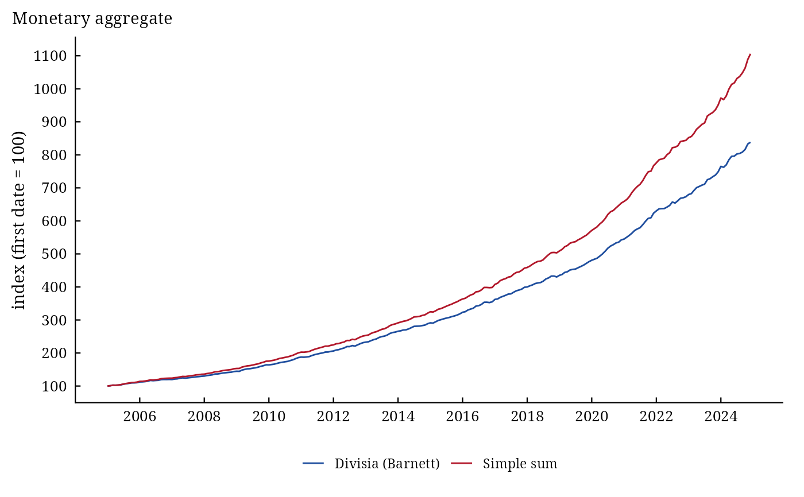

dmai() aggregates monetary assets (currency, deposits, ...) into one index of monetary services. Each
component is weighted by its share in the expenditure on monetary services, priced by its user cost (Barnett
1978, 1980): an asset that pays a rate close to the benchmark rate is held mostly as a store of value and gets a
small weight, while currency and demand deposits get a large one. The simple sum, which weights every component
equally, and the currency equivalent index are given for comparison.
Usage
dmai(
.data,
method = c("Barnett", "Hancock", "Fisher", "SimpleSum", "CE"),
logbase = NULL,
date = "Date",
x = NULL,
r = NULL,
user_cost = NULL,
benchmark = NULL,
percent = TRUE,
base = 100,
as_dt = TRUE
)
# Default S3 method
dmai(
.data,
method = c("Barnett", "Hancock", "Fisher", "SimpleSum", "CE"),
logbase = NULL,
date = "Date",
x = NULL,
r = NULL,
user_cost = NULL,
benchmark = NULL,
percent = TRUE,
base = 100,
as_dt = TRUE
)Arguments
- .data
a data frame with one row per date: a date column and, for every component, a quantity column and a rate column (named
x1,x2, ... andr1,r2, ... unlessxandrare given).- method
"Barnett"(default),"Hancock","Fisher","SimpleSum"or"CE".- logbase
base of the logarithm of the growth
DMAIof the"Barnett","Fisher","SimpleSum"and"CE"indexes;NULL(default) for the natural logarithm. Version 0.5.0 used base 10 by default;logbase = 10reproduces it.- date
name of the date column (default
"Date").- x
names of the quantity columns (default
NULL:x1,x2, ...).- r
names of the rate columns, in the order of
x(defaultNULL:r1,r2, ...).- user_cost
names of columns that give the user costs directly, in the order of
x(defaultNULL: computed from the rates). The rates are then needed only for"CE".- benchmark
the benchmark rate:
NULL(default, the largest component rate), a column name, a number or one value per row of.data, in the units of the rates.- percent
logical; are the rates in percent (default
TRUE) or decimal?- base
value of the index at the first date (default 100).
- as_dt
logical;
TRUE(default) returns the table of the index, as version 0.5.0 did;FALSEreturns the full result.
Value
With as_dt = TRUE, a data.table with the date, DMAI (the growth in percent,
NA at the first date), index and value (the index in the units of x, equal to the
simple sum at the first date). With as_dt = FALSE, an object of class c("dmai_index",
"dmai_result", "list") with index (that table), components (quantities, rates, user costs and
shares by date), benchmark, price (expenditure and dual price index), moments (see
dmai_moments()), simple_sum, fisher (Laspeyres and Paasche links, for
"Fisher") and settings. print(), plot(), ggplot2::autoplot() and
dmai_interpret() apply.
Details
With quantities \(x_{it}\) of components \(i = 1, \dots, n\) at dates \(t\), their rates of return \(r_{it}\) and the benchmark rate \(R_t\), the user cost of component \(i\) is $$\pi_{it} = \frac{R_t - r_{it}}{1 + R_t}$$ (Barnett 1978) and its expenditure share \(s_{it} = \pi_{it}x_{it} / \sum_j \pi_{jt}x_{jt}\). With \(\bar{s}_{it} = (s_{it} + s_{i,t-1})/2\), the methods are
"Barnett"the Divisia index in the discrete form of Tornqvist and Theil (Barnett 1980): $$\log\frac{Q_t}{Q_{t-1}} = \sum_i \bar{s}_{it}\left(\log x_{it} - \log x_{i,t-1}\right).$$
"Hancock"the same shares with simple growth rates (as in version 0.5.0): $$\frac{Q_t}{Q_{t-1}} - 1 = \sum_i \bar{s}_{it}\left(\frac{x_{it}}{x_{i,t-1}} - 1\right).$$
"Fisher"the Fisher ideal index, the geometric mean of the Laspeyres and Paasche indexes with the user costs as prices (Fisher 1922; Diewert 1976): $$\frac{Q_t}{Q_{t-1}} = \left(\frac{\sum_i \pi_{i,t-1}x_{it}}{\sum_i \pi_{i,t-1}x_{i,t-1}}\cdot\frac{\sum_i \pi_{it}x_{it}}{\sum_i \pi_{it}x_{i,t-1}}\right)^{1/2}.$$
"SimpleSum"the official aggregate \(\sum_i x_{it}\).
"CE"the currency equivalent index \(\sum_i (R_t - r_{it})x_{it}/R_t\) (Rotemberg, Driscoll and Poterba 1995; Barnett 1991).
All indexes are chained and equal base at the first date. The growth DMAI is
\(100\log(Q_t/Q_{t-1})/\log(\mathrm{logbase})\), in percent for the
natural logarithm, and \(100(Q_t/Q_{t-1} - 1)\) for "Hancock".
The benchmark rate is the largest rate of the components at each date when benchmark = NULL (as in
version 0.5.0; that component then has a user cost of zero), or the given benchmark, raised to the largest
component rate where it is lower (the upper envelope). The factor \(1/(1 + R_t)\) is common to
the components and does not change the shares.
The dual user-cost price index follows by factor reversal, \(P_t = E_t / V_t\), with the
expenditure \(E_t = \sum_i \pi_{it}x_{it}\) and the aggregate \(V_t\) in the
units of \(x\) (column value).
References
Barnett, W. A. (1978). The user cost of money. Economics Letters, 1(2), 145–149. doi:10.1016/0165-1765(78)90051-4
Barnett, W. A. (1980). Economic monetary aggregates: an application of index number and aggregation theory. Journal of Econometrics, 14(1), 11–48. doi:10.1016/0304-4076(80)90070-6
Diewert, W. E. (1976). Exact and superlative index numbers. Journal of Econometrics, 4(2), 115–145. doi:10.1016/0304-4076(76)90009-9
Hancock, D. (1985). The financial firm: production with monetary and nonmonetary goods. Journal of Political Economy, 93(5), 859–880. doi:10.1086/261339
Rotemberg, J. J., Driscoll, J. C. and Poterba, J. M. (1995). Money, output, and prices: evidence from a new monetary aggregate. Journal of Business and Economic Statistics, 13(1), 67–83.
See also
dmai_compare, dmai_user_cost, dmai_moments,
dmai_interpret, money_sim
Other dmai analyses:
dmai_compare(),
dmai_moments(),
dmai_user_cost()
Author
Muhammad Yaseen (myaseen208@gmail.com) and Ahmad Nadeem (Ahmed.Nadeem@sbp.org.pk)
Examples
data(money_sim)
d <-
dmai(
.data = money_sim
, method = "Barnett"
, logbase = NULL
, date = "Date"
, x = NULL
, r = NULL
, user_cost = NULL
, benchmark = "rb"
, percent = TRUE
, base = 100
, as_dt = TRUE
)
d
#> Date DMAI index value
#> <Date> <num> <num> <num>
#> 1: 2005-01-01 NA 100.0000 5413.180
#> 2: 2005-02-01 0.8504011 100.8540 5459.410
#> 3: 2005-03-01 1.7328708 102.6169 5554.839
#> 4: 2005-04-01 -0.2494176 102.3613 5541.002
#> 5: 2005-05-01 0.3359143 102.7057 5559.646
#> ---
#> 236: 2024-08-01 0.1822801 804.2102 43533.345
#> 237: 2024-09-01 0.5280486 808.4680 43763.830
#> 238: 2024-10-01 0.9855876 816.4756 44197.293
#> 239: 2024-11-01 2.0062518 833.0216 45092.957
#> 240: 2024-12-01 0.6266100 838.2578 45376.401
fit <-
dmai(
.data = money_sim
, method = "Barnett"
, logbase = NULL
, date = "Date"
, x = NULL
, r = NULL
, user_cost = NULL
, benchmark = "rb"
, percent = TRUE
, base = 100
, as_dt = FALSE
)
fit
#> Divisia (Barnett) index of 8 components, 240 dates
#> ==================================================
#> Dates: 2005-01-01 to 2024-12-01 (240); components: x1, x2, x3, x4, x5, x6, x7, x8
#> Benchmark rate: column rb (upper envelope with the component rates)
#> Growth (DMAI, log, percent): mean 0.8896, sd 0.5902, last 0.6266
#> Index: 100 at the first date, 838.3 at the last; simple sum: 1,106
#>
#> Date DMAI index value
#> <Date> <num> <num> <num>
#> 1: 2005-01-01 NA 100.0 5413
#> 2: 2005-02-01 0.8504 100.9 5459
#> 3: 2005-03-01 1.7329 102.6 5555
#> 4: 2005-04-01 -0.2494 102.4 5541
#> 5: 2005-05-01 0.3359 102.7 5560
#> ---
#> 236: 2024-08-01 0.1823 804.2 43533
#> 237: 2024-09-01 0.5280 808.5 43764
#> 238: 2024-10-01 0.9856 816.5 44197
#> 239: 2024-11-01 2.0063 833.0 45093
#> 240: 2024-12-01 0.6266 838.3 45376
#>
#> Sources: Barnett (1978); Barnett (1980); Tornqvist (1936); Theil (1967). Full
#> references: dmai_cite(x).
plot(x = fit)
